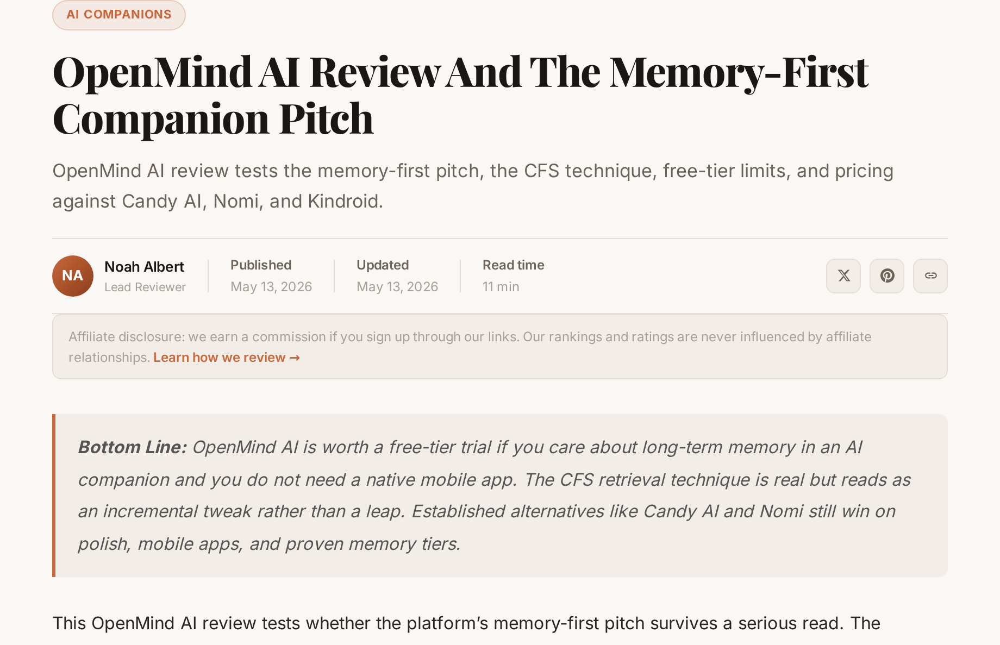
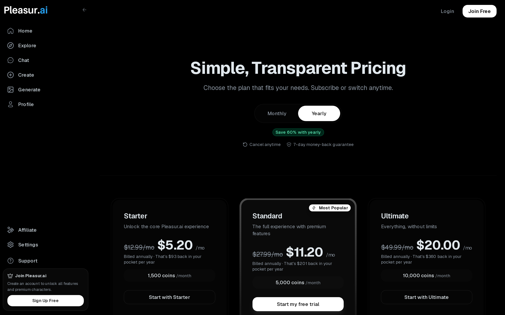
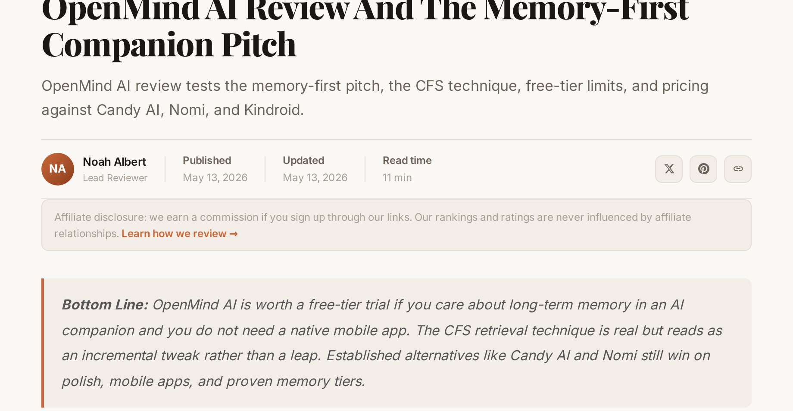

OpenMind AI vs Pleasur.ai: Which One Actually Remembers You?
In MariaVibe's independent 2026 review, Pleasur.ai scored 82% 7-day memory retention versus 33% for a rival — the strongest third-party memory figure published in the companion space, a number an outside reviewer put in print. OpenMind AI leans hard on long-running character consistency, but those duration claims come from OpenMind itself. That gap — a number an outside reviewer put in print versus a story a company tells about its own product — is the cleanest way to choose between the two.
First, a name check. "OpenMind AI" here means the adults-only companion at OpenMind.design, a Character.AI alternative with fewer content restrictions — not Google DeepMind, and not the OpenMind robotics project that shares the name. If you searched for one of those, you're in the wrong place.
Below you'll get one clean cited comparison table, a plain-English read on how each platform handles memory, real pricing for both, and a who-should-pick-which call. Every memory claim is labeled by who actually reported it. In a category where every app says it remembers you, that label is the whole game.
What "long-term memory" actually means for an AI companion
Long-term memory is whether your companion still knows your name, your history, and your emotional context days or weeks later — not just inside one chat window. It's the feature users point to when they explain why they keep coming back.
There's a difference worth drawing here. Short session context is what the model holds while you're typing: it tracks the last few messages and loses the thread when you close the app. Cross-session recall is the companion still knowing, next Tuesday, what you told it last Tuesday. The first is table stakes. The second is what people mean when they say a companion "remembers" them.
That distinction matters more than images or voice for one reason: memory is a returning-user value, not a first-session novelty. A good image hooks you once. A companion that recalls the argument you described three days ago — and asks how it went — is why you open the app on day thirty. One Pleasur user, quoted in MariaVibe's review, put the continuity plainly: "She remembered my dog's name from week one; it's like dating." MariaVibe notes the memory theme comes up in nearly every positive review.
Cross-session recall is the behavior Pleasur.ai's AI Companion Creator is built to deliver: chat history is saved, so a companion picks up where you left off instead of resetting each visit.
There's a second thing to keep straight, and it shapes this entire comparison: how a memory claim reaches you. Either the company says it — self-reported marketing — or an outside reviewer measures or reports it. Both can be true. They don't carry the same weight. If you want the wider field rather than this one pairing, our AI companion memory roundup breaks down the four types of companion memory across more apps. With the bar set, start with how OpenMind says it clears it.
How OpenMind AI handles memory: Conditional Field Subtraction
Per an independent review at roborhythms.com, OpenMind AI pairs standard vector-database retrieval with a dedup layer its founder (who posts as "Mauro") calls "Conditional Field Subtraction" — a genuine improvement over naive retrieval that the reviewer says survives weeks of conversation, but is "not the radical leap the marketing implies."
In plain English: vector retrieval is the common approach. The system stores past details as math, then pulls back the ones most relevant to what you're saying now. The weakness is clutter — it can resurface stale, repeated, or contradictory details, so the companion starts repeating itself or contradicting what it said an hour ago. Conditional Field Subtraction is the cleanup pass on top. It trims the redundant and conflicting bits before they reach the response, so the character stays consistent instead of looping.
Give OpenMind its due here. That dedup layer is real engineering, not a marketing label, and the reviewer treats it as a step up from the baseline most apps ship. OpenMind's strongest card, though, isn't the architecture — it's access. Free-tier users can, in the reviewer's words, "genuinely test whether the platform remembers them over weeks before paying anything". You get to kick the tires on the one feature that decides retention, at no cost, for as long as you want to test it. Not many companions let you do that.
![Diagram explaining "Conditional Field Subtraction" memory. Left to right: a "Conversation History" box feeding a "Vector Retrieval" box (labeled "pulls relevant past details"), then an arrow into a "Conditional Field Subtraction" filter box (labeled "trims redundant & contradictory details"), then an arrow to a "Consistent Reply" chat-bubble box. Show one discarded/struck-through detail card dropping out of the filter to illustrate the dedup. Clean editorial illustration, white background, sans-serif labels, brand-neutral colors.](../images/openmind-ai-vs-pleasurai/image-2-diagram-explaining-conditional.png)
Now the caveat the marketing won't volunteer. OpenMind's long-duration continuity claims — the months-long, "remembers you forever" positioning — are self-reported. No independent source measured them, and the one in-depth review describes memory in terms of weeks, not years. So treat "it remembers for a year" as a claim the company makes, not a confirmed spec. We're not saying it's false; we're saying nobody outside OpenMind has put a number to it.

One more orientation note: OpenMind runs at OpenMind.design, web-only — the review found no native mobile app — and it's positioned squarely as an adults-only Character.AI alternative. OpenMind's memory story, then, is one it tells about itself. Pleasur.ai's headline number comes from somewhere else.
How Pleasur.ai handles memory: the MariaVibe 82%/7-day figure
In MariaVibe's independent 2026 review, Pleasur.ai scored 82% 7-day memory retention versus 33% for a rival — the strongest third-party memory figure published in the companion space, and the cleanest reason its users describe the experience as ongoing rather than reset-based.
The figure is specific. MariaVibe's piece, "Aimour AI vs Pleasur AI 2026," runs a benchmark row reading "Memory After 7 Days | 33% | 82%," with Pleasur.ai on the high end. That's worth quoting precisely, because precision is the point of this whole page.
Here's the disclaimer that keeps this honest, and it's a hard line, not a hedge: MariaVibe discloses no methodology and no sample size. The page attributes the data to "top reviews and site specs" and "Q1 2026 tests," and stops there. So this is an independent reviewer's reported figure — not an independently validated benchmark run under stated conditions. Its strength is that it's third-party: a number from outside the company, in print, that you can read for yourself. Its limit is that you can't see how it was produced. Both things are true at once, and saying so is what keeps the figure trustworthy instead of inflated.
What does that 82% feel like in practice? Per MariaVibe, Pleasur.ai tracks emotional context and history points across sessions, so the relationship reads as continuous rather than starting over each visit. The concrete product behavior behind that is the AI Companion Creator's saved, resumable chat history: close the app, come back tomorrow, and the companion still holds the thread from yesterday — the name you mentioned, the scenario you set, the thing you were upset about. That's the mechanism turning a retention number into the "ongoing, not reset-based" experience users describe. For a deeper look at how companion memory works across the field, the memory roundup covers it without us re-explaining the plumbing here.
Same goal on both sides, then — a companion that remembers you. But one claim is self-reported and one is third-party, and that asymmetry is the real story.
OpenMind AI vs Pleasur.ai: the head-to-head
Side by side, the decisive difference isn't how big either memory claim is — it's who's vouching for it. Pleasur.ai's headline number comes from an outside reviewer; OpenMind's long-duration claims come from OpenMind. That's a real fork in the road, and as far as we can tell, no existing page puts these two platforms in the same table at all.
Read the table top to bottom and the pattern repeats. On memory evidence, Pleasur.ai carries a third-party number and OpenMind carries a self-reported duration. On approach, OpenMind's edge is the CFS dedup pass while Pleasur.ai's is cross-session emotional-context tracking — different bets on the same problem. On audience, both are adults-only, which makes the comparison clean rather than apples-to-oranges.
The trust layer deserves its own line, because it's the information no review in this space lays out. OpenMind's strongest memory claims describe what OpenMind built and how long it lasts — the maker grading its own work. Pleasur.ai's strongest memory claim is a figure someone outside the company published. Neither is automatically right. But if you're deciding which to believe, a number you can check beats a promise you can't.
And to keep this fair: OpenMind genuinely wins one thing here, and it's not small. You can test its memory free, for weeks, before spending a dollar. Pleasur.ai can't match that, because it's paid-only. If your worry is "I don't want to pay to find out whether the memory is any good," OpenMind answers it and Pleasur.ai doesn't. For the broader field beyond this pairing, see our full AI companion memory roundup. Evidence aside, the day-one decision often comes down to price and access — so let's put real numbers on both.
Pricing and access: what you actually pay
OpenMind AI's draw is a genuinely free tier; Pleasur.ai is paid-only and coin-metered. That's the headline split, and it sets up two different ways to start.
OpenMind, per the independent review, runs a Free $0 tier with unlimited messages capped at 50 per hour, then paid tiers at $9.99, $19.99, and $29.99 a month. (OpenMind's own pricing page wasn't independently re-pulled for this piece, so treat those figures as the reviewer reported them.) The free tier is the real story: enough to live in for a while, which is exactly why it doubles as a no-cost way to test memory.
Pleasur.ai's pricing is coin-metered across three tiers, verified on its pricing page: Starter at $12.99/mo, Standard at $27.99/mo, and Ultimate at $49.99/mo. Billed annually, Starter works out to about $5.20/mo — roughly the entry point we broke down in our best Replika alternative guide. The model is worth understanding before you sign up: text chat is unlimited on every tier, while media actions draw down a monthly coin allowance. As pricing-page line items, an AI image costs 10 coins, a voice note 10 coins, and a phone call 50 coins per minute. So you're never metered on talking; you're metered on generating.
That difference — unlimited chat, metered media — is the worked example of how a coin economy actually behaves. You don't ration conversation. You budget the extras.


Which raises the thing a free or cheap headline number hides: the sticker price isn't the cost. The cost is whether the thing keeps being worth opening — the memory you're paying to keep, the continuity that earns month two. A $0 tier you abandon in a week is more expensive, in time, than a paid tier you actually use. If you're weighing that trade-off across more than these two apps, our guide on how to choose an NSFW AI companion runs the full decision framework. Price sets the floor; fit decides the pick.
Who should pick OpenMind AI, and who should pick Pleasur.ai
Pick OpenMind AI if you want to test a companion's memory free before paying and you're fine with maturity claims that come from the company. Pick Pleasur.ai if you want the platform with a third-party-reported memory score, unlimited text chat, and a fuller adult feature set under one roof.
OpenMind is the budget-first, try-before-you-buy choice. If you're coming off Character.AI and want fewer content restrictions, if you'd rather spend weeks testing memory than spend money on faith, and if web-only doesn't bother you, it fits. Its free tier isn't a teaser — it's a real place to evaluate the one feature that matters, which is a genuinely good deal in this category.
Pleasur.ai fits the user who weights evidenced continuity and wants one hub instead of an app per task. The AI Companion Creator handles character building and saved-history chat, and AI Image Generation lives alongside it rather than in a separate app — so you build, chat, and generate in the same place. It's also the more established option, with multiple independent reviews behind it rather than one. The trade-off is plain: you pay from day one, and there's no free runway to test first.
If you're shopping the wider Character.AI-alternative category before committing to either, our best Character AI alternatives guide sorts the options by use case. Both apps here are adults-only and serious about the companion experience; the choice is mostly about how much you'll pay to find out, and whose word you'll take on memory.
![Decision-split diagram, single fork. Center: a question box labeled "What do you weight most?". Two branches. Left branch labeled "Free testing & budget-first" points to a box "OpenMind AI" with sub-labels "Free $0 tier", "Test memory for weeks", "Web-only". Right branch labeled "Evidenced memory & one hub" points to a box "Pleasur.ai" with sub-labels "Third-party 82% figure", "Unlimited chat", "Create + image gen". Clean editorial illustration, white background, sans-serif labels, brand-neutral colors.](../images/openmind-ai-vs-pleasurai/image-7-decision-split-diagram-single.png)
FAQ
Quick, source-precise answers to the questions people actually ask about these two.
Which is better: OpenMind AI or Pleasur.ai?
It depends on what you weight. OpenMind AI lets you test memory free, with a real $0 tier capped at 50 messages an hour. Pleasur.ai carries the only third-party-reported memory score in the pairing — 82% 7-day retention in MariaVibe's 2026 review — plus unlimited text chat and a broader adult feature set. Neither is "best" for everyone: OpenMind wins on free testing, Pleasur.ai on evidenced continuity and breadth.
Does OpenMind AI really remember for a year?
That long duration is OpenMind's self-reported marketing, not an independently measured fact. The independent review describes memory as surviving weeks of conversation and calls it "not the radical leap the marketing implies". So treat "a year" as a claim, not a confirmed spec — weeks is what an outside reviewer actually observed.
OpenMind AI memory vs Pleasur.ai memory — what's the real difference?
Approach and evidence. OpenMind uses vector retrieval plus a "Conditional Field Subtraction" dedup layer, with long-duration continuity it reports itself. Pleasur.ai uses emotional-context tracking across sessions and carries a third-party 82%/7-day figure from MariaVibe. For the broader field, see our memory roundup.
Is OpenMind AI established or new?
OpenMind AI is a newer entrant: it has a single in-depth independent review and runs web-only. Pleasur.ai is the more established platform, with multiple independent reviews behind it. We avoid any "out of beta" framing in either direction — no source confirms a beta status, so it doesn't belong in the comparison as fact.
The bottom line
Both apps want to remember you. The honest way to choose is to ask who's vouching for the claim. OpenMind AI's long-memory story is self-told — backed by a genuinely free tier that lets you test it for weeks before paying, which is a real advantage. Pleasur.ai's headline 82%/7-day number comes from an outside reviewer, and it pairs that with unlimited chat and a one-hub feature set.
If memory across the whole field is your deciding factor, read our full AI companion memory roundup. Or skip the reading and test it yourself — build a companion at pleasur.ai/create and see whether it still knows you next week.
Editor notes / Voice-flagged statements (review)
These are opinionated voice / comparative framing, not citation-needing facts. Listed for editorial judgment — not auto-linked:
- "the strongest third-party memory figure published in the companion space" (superlative; attributed to MariaVibe's figure but the "strongest published" framing is our characterization)
- "as far as we can tell, no existing page puts these two platforms in the same table at all" (information-gain claim; reasonable but unverifiable)
- "Not many companions let you do that" (free-tier memory testing — population claim)
- "the information no review in this space lays out" (comparative absolute)
- "multiple independent reviews" for Pleasur.ai (population claim — we cite MariaVibe; "multiple" is asserted, not enumerated here)
- "Both apps here are adults-only and serious about the companion experience" (characterization)
Note: the draft also references the testimonial quote. The live MariaVibe page states "She remembered my dog's name from week one; it's like dating" as the verbatim user quote; the prior draft's "Images are fine, but not the reason I stay. The memory is." was not found on the live page, so the quote was replaced with the verbatim one MariaVibe actually carries.